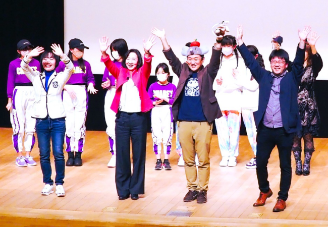
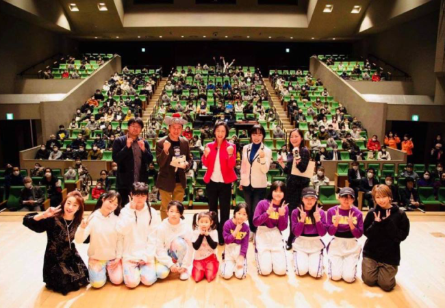
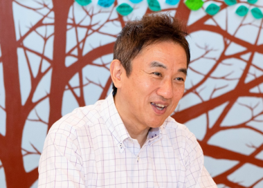

講演・プロデュース
イベントの企画立案から現場統括、SNS戦略、ステージ演出までを一貫してプロデュースします。
まちづくりライブ
自立塾代表の市川潤子がプロデュースした、まちづくりライブ（栃木県宇都宮市開催・リアル＋オンラインのハイブリッド化）のご登壇者、政治家の福田さん、医師の髙橋さんにご感想を伺いました。


政治家 福田智恵様
【彼女は聡明で、機転が利いて、根拠に基づく提案ができて、トラブルにもユーモアで対応できます】
(1) 準備期間がわずかな中での市川の企画立案から、現場統括はどうだったか？
相談したのは12月20日。イベント開催は、2月22日(水)宇都宮市文化会館と日程と場所が既に決まっていて、その際に「私のまちづくりへの思いを多くの方へ届けたい、地域共生社会の実現に向けてプレイヤーを増やしたい」との自分の思いを伝えると、市川さんは新たな集客戦略や手法を採り入れた企画を、たちまち提案してくれました。
(2) 新たな時代の試みとして市川が、SNS戦略を今回投入しましたが、FBでの告知ライブの登壇者3名たちとの、彼女のホスト役を見ていてのご感想は？
対談ライブは1週間おきに3回3人が行いました。
市川さんの洗練されたトークで、活動の原点や登壇者の魅力が引き出されていました。
対談ライブでイベント告知は、初めての経験でした。市川さんの軽快な進行で、登壇者の活動の原点、お人柄と魅力が引き出されていました。
更に、これまで届かなかった方々へもイベント告知ができ、関心を高めることができたと感じました。
私の対談ライブでは、始まって間もなく登壇者の私が消えてしまうアクシデントが発生。市川さんは機転を利かせ、トラブルをユーモアで神対応。視聴者は離れるどころか、視聴者数は増加しました。まさに神対応でした！(^O^)
(3) 当日の舞台裏、トラブル対応、ステージの見せ方【例：カーテンコールや撮影アングルの指示出し】
市川さんが指示出しして下さった、登壇者のスクラム映像やカーテンコールは、のちに活動報告をする際にとても有効でした。ただ記録に残すというだけでなく、映像で「何を伝えたいか」を考えて記録することが大切であり、撮影班との想いの共有はとても重要だと感じました。トータルで勉強になりました。
(4) 登壇者の10分間プレゼン内容等や市川の人柄に触れたご感想
市川さんの指示で視聴者に伝えたい内容を単語にして選び、そこからプレゼン内容を組立てることによって、10分という短い時間に凝縮してお届けできたと思います。
彼女は聡明で、機転が利いて。根拠に基づく提案ができて、トラブルにもユーモアで対応できて、何より私と感性が近いと感じられる（笑）
これからもどうぞよろしくお願いします♪

医師 髙橋昭彦様
ひばりクリニック理事長・認定特定非営利活動法人うりずん代表理事
【 市川さんのライブの話はどこまでもわかりやすく、ハートをつかむ話というのはこういうことだなと思いました 】
マイク１本で淡々と話してきた私にとって、今回のまちづくりライブはまさに異次元の時間でした。
発表時間はわずか10分、参加者の記憶に残って欲しい「パワーワード」を決めて準備し、本番数日前のSNS告知ライブでは、市川さんの卓越したリードのお陰で、私たち登壇者は気持ちよく語ることができました。
ITより「会いて～」ほうの私は、SNSで「いいね」が湧き上がる画面を「花火」と呼ぶ事や、SNSでのシェアのタイミング、ストーリーズのアップの仕方などを彼女から教わり、舞台裏で打ち合わせ、動画撮影の戦略、カーテンコールの準備など、すべて市川さんのプロデュースに身をゆだねました。
ライブ本番のトップの市川さんの話はどこまでもわかりやすく、ハートをつかむ話というのはこういうことだなと思いました。
お蔭様で、私の話もライブ全体も、無事に終えることができました。
ありがとうございました。またご一緒できる日を楽しみにしています！
あなたの一歩が、誰かの希望になる。
気になることを、まずは話してみてください。お子さまのこと、ご家庭のこと、これからのこと。
無理におすすめすることはありません。どうぞお気軽にご連絡ください。